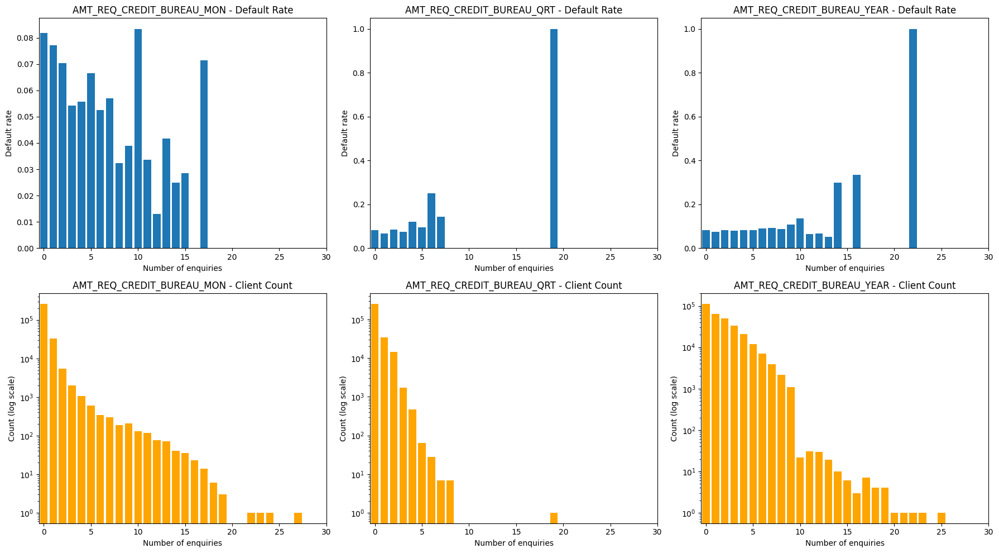
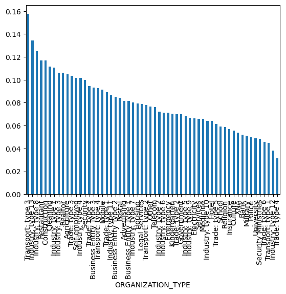
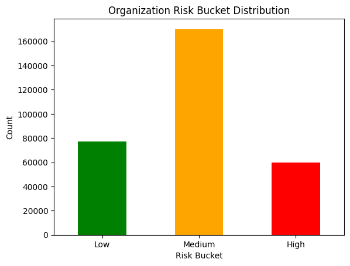
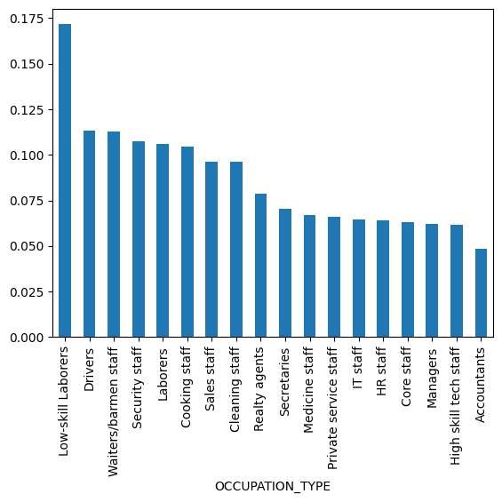

import sys
from pathlib import Path
# Locate repo root — works whether running locally or on Binder/Colab
_root = next((p for p in [Path.cwd(), *Path.cwd().parents] if (p / '.git').exists()), Path('../../'))
sys.path.insert(0, str(_root / 'src'))
from data_loader import ensure_data, PROCESSED_DIR
ensure_data()
# loading the data
df = pd.read_csv(PROCESSED_DIR / 'application_train.csv')Home Credit Default Risk
Following the Hands-On ML checklist — Aurélien Géron
Introduction
Initial question: Can we predict a client’s repayment ability using alternative data, so that creditworthy clients who lack formal credit history are not rejected and receive loan terms that set them up for success?
Many people struggle to get loans due to insufficient or non-existent credit histories. This population is often taken advantage of by untrustworthy lenders. Home Credit strives to broaden financial inclusion for the unbanked by providing a positive and safe borrowing experience. To assess repayment ability, they use alternative data such as telco and transactional information.
In this notebook we tackle the Kaggle competition where Home Credit challenges us to unlock the full potential of their data. The task is a supervised binary classification problem — predicting whether a client will default (1) or not (0) — evaluated using ROC-AUC and F1 Score with k-fold cross-validation.
Data Preprossesing
Lets first get an idea of our Dataframe
df.shape[0], df.shape[1](307511, 122)Seeing that we have a lot of rows, we now know that we will have to be carefull with computing intense processes
First step should always be to find Collumns that dont carry any information, the easiest way to do this is by a low variance function
cols_to_drop = [col for col in df.columns if df[col].value_counts(normalize=True).values[0] > 0.95]
df.drop(columns=cols_to_drop, inplace=True)
# to visualize the amount of remaining columns
df.shape[1]96Next in the data we have many collumns with avg, median and mode marking. Since median is most robust, we will keep it and drop the rest
#for loop to search for avg and mode collumns and drop them
cols_to_drop = [col for col in df.columns if '_AVG' in col or '_MODE' in col]
df.drop(columns=cols_to_drop, inplace=True)
df.shape[1]65It would be reasonable to now see which features might be so incomplete that analyzing them would be unreasonable to check this we use following code
df.isnull().mean()SK_ID_CURR 0.000000
TARGET 0.000000
NAME_CONTRACT_TYPE 0.000000
CODE_GENDER 0.000000
FLAG_OWN_CAR 0.000000
...
FLAG_DOCUMENT_6 0.000000
FLAG_DOCUMENT_8 0.000000
AMT_REQ_CREDIT_BUREAU_MON 0.135016
AMT_REQ_CREDIT_BUREAU_QRT 0.135016
AMT_REQ_CREDIT_BUREAU_YEAR 0.135016
Length: 65, dtype: float64Realizing that only these 3 have nan values, I did some further research. These collums are about asking for reports in the credit bureau which were probably not filed and thus are nan so we can fill them with 0. we dropped before collumns that were smaller increments of hour, day, week. so further I will check the correlation of these to the default risk
# I ran into an issue with this column, so I will convert it to numeric and fill the NaN values with 0
cols = [col for col in df.columns if 'AMT_REQ_CREDIT_BUREAU' in col]
for col in cols:
df[col] = pd.to_numeric(df[col], errors='coerce').fillna(0)I would like to check now if these features deviate significantly for the default risk
fig, axes = plt.subplots(2, 3, figsize=(18, 10))
for i, col in enumerate(cols):
grouped = df.groupby(col)['TARGET'].agg(['mean', 'count'])
# Default rate
axes[0, i].bar(grouped.index, grouped['mean'])
axes[0, i].set_title(f'{col} - Default Rate')
axes[0, i].set_xlabel('Number of enquiries')
axes[0, i].set_ylabel('Default rate')
axes[0, i].set_xlim(-0.5, 30)
# Client count (log scale)
axes[1, i].bar(grouped.index, grouped['count'], color='orange')
axes[1, i].set_title(f'{col} - Client Count')
axes[1, i].set_xlabel('Number of enquiries')
axes[1, i].set_ylabel('Count (log scale)')
axes[1, i].set_yscale('log')
axes[1, i].set_xlim(-0.5, 30)
plt.tight_layout()
plt.show()

After seeing the trends I suggest these parameters are just noise so they need to be dropped
cols_to_drop = [col for col in df.columns if 'AMT_REQ_CREDIT_BUREAU' in col]
df.drop(columns=cols_to_drop, inplace=True)
df.shape[1]62Now we need to remove categorical/ordinal features
df.select_dtypes(include='object').nunique()C:\Users\simon\AppData\Local\Temp\ipykernel_11248\3404847108.py:1: Pandas4Warning: For backward compatibility, 'str' dtypes are included by select_dtypes when 'object' dtype is specified. This behavior is deprecated and will be removed in a future version. Explicitly pass 'str' to `include` to select them, or to `exclude` to remove them and silence this warning.
See https://pandas.pydata.org/docs/user_guide/migration-3-strings.html#string-migration-select-dtypes for details on how to write code that works with pandas 2 and 3.
df.select_dtypes(include='object').nunique()NAME_CONTRACT_TYPE 2
CODE_GENDER 3
FLAG_OWN_CAR 2
FLAG_OWN_REALTY 2
NAME_TYPE_SUITE 7
NAME_INCOME_TYPE 8
NAME_EDUCATION_TYPE 5
NAME_FAMILY_STATUS 6
NAME_HOUSING_TYPE 6
OCCUPATION_TYPE 18
WEEKDAY_APPR_PROCESS_START 7
ORGANIZATION_TYPE 58
dtype: int64So now we have the data frame and we know the features that are not numerical so that we can change them to be used later for any kind of correlational calculations. It is found that 2 of them are to big to for example one hot encode them so lets try to manually find out how important they are
For that I will group them and see if there are any outliers for defaulting
df.groupby('ORGANIZATION_TYPE')['TARGET'].mean().sort_values(ascending=False).plot(kind='bar')
df.groupby('ORGANIZATION_TYPE')['TARGET'].mean().sort_values(ascending=False)ORGANIZATION_TYPE
Transport: type 3 0.157540
Industry: type 13 0.134328
Industry: type 8 0.125000
Restaurant 0.117062
Construction 0.116798
Cleaning 0.111538
Industry: type 1 0.110683
Industry: type 3 0.106162
Realtor 0.106061
Agriculture 0.104727
Trade: type 3 0.103379
Self-employed 0.101739
Industry: type 4 0.101482
Security 0.099784
Trade: type 7 0.094496
Business Entity Type 3 0.092996
Transport: type 4 0.092812
Mobile 0.091483
Trade: type 1 0.089080
Industry: type 11 0.086538
Business Entity Type 2 0.085284
Postal 0.084376
Advertising 0.081585
Business Entity Type 1 0.081384
Industry: type 7 0.080337
Housing 0.079446
Legal Services 0.078689
Transport: type 2 0.078040
Other 0.076425
Telecom 0.076256
Industry: type 2 0.072052
Industry: type 6 0.071429
Emergency 0.071429
Kindergarten 0.070349
Trade: type 2 0.070000
Government 0.069781
Industry: type 5 0.068447
Industry: type 9 0.066805
Electricity 0.066316
Services 0.066032
Medicine 0.065845
Industry: type 10 0.064220
Hotel 0.064182
Trade: type 5 0.061224
School 0.059148
Religion 0.058824
Insurance 0.056951
Culture 0.055409
XNA 0.053996
Bank 0.051855
Military 0.051253
Police 0.049979
University 0.048983
Security Ministries 0.048632
Trade: type 6 0.045959
Transport: type 1 0.044776
Industry: type 12 0.037940
Trade: type 4 0.031250
Name: TARGET, dtype: float64#since xna is a missing value, we will find out how many missing values there are
df[df['ORGANIZATION_TYPE'] == 'XNA'].shape[0]55374The XNA makes up 18% of the whole data, so its important to be kept
After my analysis, I would bucket into high, mid and low risk where the cuts are at 10 and 6%
org_risk = df.groupby('ORGANIZATION_TYPE')['TARGET'].mean()
df['ORG_RISK_BUCKET'] = df['ORGANIZATION_TYPE'].map(org_risk)
df['ORG_RISK_BUCKET'] = pd.cut(df['ORG_RISK_BUCKET'], bins=[0, 0.06, 0.10, 1], labels=[0, 1, 2]).astype(int)
df.drop(columns=['ORGANIZATION_TYPE'], inplace=True)
df['ORG_RISK_BUCKET'].value_counts().sort_index().plot(kind='bar', color=['green', 'orange', 'red'])
plt.xticks([0, 1, 2], ['Low', 'Medium', 'High'], rotation=0)
plt.title('Organization Risk Bucket Distribution')
plt.xlabel('Risk Bucket')
plt.ylabel('Count')
plt.show()
df.groupby('OCCUPATION_TYPE')['TARGET'].mean().sort_values(ascending=False).plot(kind='bar')
After running into an Issue with nan values, I am going to check for them
df['OCCUPATION_TYPE'].isnull().sum()np.int64(96391)96391 is over 30% of the data, which is a bit to much, so we are going to drop them
df.drop(columns=['OCCUPATION_TYPE'], inplace=True)df.shape[1] 61#Lets check for object type columns again
df.select_dtypes(include='object').nunique()C:\Users\simon\AppData\Local\Temp\ipykernel_11248\708984219.py:2: Pandas4Warning: For backward compatibility, 'str' dtypes are included by select_dtypes when 'object' dtype is specified. This behavior is deprecated and will be removed in a future version. Explicitly pass 'str' to `include` to select them, or to `exclude` to remove them and silence this warning.
See https://pandas.pydata.org/docs/user_guide/migration-3-strings.html#string-migration-select-dtypes for details on how to write code that works with pandas 2 and 3.
df.select_dtypes(include='object').nunique()NAME_CONTRACT_TYPE 2
CODE_GENDER 3
FLAG_OWN_CAR 2
FLAG_OWN_REALTY 2
NAME_TYPE_SUITE 7
NAME_INCOME_TYPE 8
NAME_EDUCATION_TYPE 5
NAME_FAMILY_STATUS 6
NAME_HOUSING_TYPE 6
WEEKDAY_APPR_PROCESS_START 7
dtype: int64So now that we cleaned the big groups, we can now focus on one hot encoding the rest
#one hot encoding the remaining object type columns
df = pd.get_dummies(df, drop_first=True)#Checking again for object type columns
df.select_dtypes(include='object').nunique()Series([], dtype: float64)Now we are clear for actual data evaluation. Lets find correlations now
df.corr()['TARGET'].sort_values(ascending=False)TARGET 1.000000
DAYS_BIRTH 0.078239
ORG_RISK_BUCKET 0.064043
REGION_RATING_CLIENT_W_CITY 0.060893
REGION_RATING_CLIENT 0.058899
...
NAME_INCOME_TYPE_Pensioner -0.046209
NAME_EDUCATION_TYPE_Higher education -0.056593
EXT_SOURCE_1 -0.155317
EXT_SOURCE_2 -0.160472
EXT_SOURCE_3 -0.178919
Name: TARGET, Length: 89, dtype: float64What is EXT_SOURCE_1, Its the external evaluation of clients and has the highest correlation. Negative it is because the higher the score the less likely they are to default.
#another quick size check
df.shape[1]89#lets continue with the correlation matrix to find highly correlated features to drop
corr_matrix = df.corr().abs()
upper = corr_matrix.where(np.triu(np.ones(corr_matrix.shape), k=1).astype(bool))
high_corr = [(col, row, round(upper.loc[row, col], 3)) for col in upper.columns for row in upper.index if upper.loc[row, col] > 0.8]
high_corr.sort(key=lambda x: -x[2])
high_corr[:20][('FLAG_EMP_PHONE', 'DAYS_EMPLOYED', np.float64(1.0)),
('NAME_INCOME_TYPE_Pensioner', 'DAYS_EMPLOYED', np.float64(1.0)),
('NAME_INCOME_TYPE_Pensioner', 'FLAG_EMP_PHONE', np.float64(1.0)),
('OBS_60_CNT_SOCIAL_CIRCLE', 'OBS_30_CNT_SOCIAL_CIRCLE', np.float64(0.998)),
('AMT_GOODS_PRICE', 'AMT_CREDIT', np.float64(0.987)),
('REGION_RATING_CLIENT_W_CITY', 'REGION_RATING_CLIENT', np.float64(0.951)),
('LIVINGAPARTMENTS_MEDI', 'APARTMENTS_MEDI', np.float64(0.942)),
('LIVINGAREA_MEDI', 'APARTMENTS_MEDI', np.float64(0.916)),
('NAME_EDUCATION_TYPE_Secondary / secondary special',
'NAME_EDUCATION_TYPE_Higher education',
np.float64(0.888)),
('LIVINGAREA_MEDI', 'LIVINGAPARTMENTS_MEDI', np.float64(0.885)),
('CNT_FAM_MEMBERS', 'CNT_CHILDREN', np.float64(0.879)),
('LIVINGAREA_MEDI', 'ELEVATORS_MEDI', np.float64(0.868)),
('DEF_60_CNT_SOCIAL_CIRCLE', 'DEF_30_CNT_SOCIAL_CIRCLE', np.float64(0.861)),
('ELEVATORS_MEDI', 'APARTMENTS_MEDI', np.float64(0.837)),
('LIVE_CITY_NOT_WORK_CITY', 'REG_CITY_NOT_WORK_CITY', np.float64(0.826)),
('LIVINGAPARTMENTS_MEDI', 'ELEVATORS_MEDI', np.float64(0.814))]We find a few data points that highly correlate. DAYS_EMPLOYED already for example tells us if someone is a pensioneer or not and if they have a work phone. The best way to drop is to find the best correlation
# Get correlation with TARGET for all features
target_corr = df.corr()['TARGET'].abs()
cols_to_drop = []
# For each highly correlated pair, show which has stronger target correlation
for col1, col2, corr_val in high_corr:
corr1 = target_corr.get(col1, 0)
corr2 = target_corr.get(col2, 0)
keep = col1 if corr1 >= corr2 else col2
drop = col2 if corr1 >= corr2 else col1
print(f"Pair ({corr_val}): keep '{keep}' ({round(max(corr1,corr2),4)}), drop '{drop}' ({round(min(corr1,corr2),4)})")
cols_to_drop.append(drop)
# Drop duplicates in case same column appears multiple times
cols_to_drop = list(set(cols_to_drop))
df.drop(columns=cols_to_drop, inplace=True)Pair (1.0): keep 'FLAG_EMP_PHONE' (0.046), drop 'DAYS_EMPLOYED' (0.0449)
Pair (1.0): keep 'NAME_INCOME_TYPE_Pensioner' (0.0462), drop 'DAYS_EMPLOYED' (0.0449)
Pair (1.0): keep 'NAME_INCOME_TYPE_Pensioner' (0.0462), drop 'FLAG_EMP_PHONE' (0.046)
Pair (0.998): keep 'OBS_30_CNT_SOCIAL_CIRCLE' (0.0091), drop 'OBS_60_CNT_SOCIAL_CIRCLE' (0.009)
Pair (0.987): keep 'AMT_GOODS_PRICE' (0.0396), drop 'AMT_CREDIT' (0.0304)
Pair (0.951): keep 'REGION_RATING_CLIENT_W_CITY' (0.0609), drop 'REGION_RATING_CLIENT' (0.0589)
Pair (0.942): keep 'APARTMENTS_MEDI' (0.0292), drop 'LIVINGAPARTMENTS_MEDI' (0.0246)
Pair (0.916): keep 'LIVINGAREA_MEDI' (0.0327), drop 'APARTMENTS_MEDI' (0.0292)
Pair (0.888): keep 'NAME_EDUCATION_TYPE_Higher education' (0.0566), drop 'NAME_EDUCATION_TYPE_Secondary / secondary special' (0.0498)
Pair (0.885): keep 'LIVINGAREA_MEDI' (0.0327), drop 'LIVINGAPARTMENTS_MEDI' (0.0246)
Pair (0.879): keep 'CNT_CHILDREN' (0.0192), drop 'CNT_FAM_MEMBERS' (0.0093)
Pair (0.868): keep 'ELEVATORS_MEDI' (0.0339), drop 'LIVINGAREA_MEDI' (0.0327)
Pair (0.861): keep 'DEF_30_CNT_SOCIAL_CIRCLE' (0.0322), drop 'DEF_60_CNT_SOCIAL_CIRCLE' (0.0313)
Pair (0.837): keep 'ELEVATORS_MEDI' (0.0339), drop 'APARTMENTS_MEDI' (0.0292)
Pair (0.826): keep 'REG_CITY_NOT_WORK_CITY' (0.051), drop 'LIVE_CITY_NOT_WORK_CITY' (0.0325)
Pair (0.814): keep 'ELEVATORS_MEDI' (0.0339), drop 'LIVINGAPARTMENTS_MEDI' (0.0246)df.shape[1]77from sklearn.base import BaseEstimator, TransformerMixin
from sklearn.pipeline import Pipeline
class DropIDColumns(BaseEstimator, TransformerMixin):
"""Drop SK_ID columns — identifiers with no predictive value."""
def fit(self, X, y=None): return self
def transform(self, X):
cols = [col for col in X.columns if 'SK_ID' in col]
return X.drop(columns=cols)
class DropLowVariance(BaseEstimator, TransformerMixin):
"""Drop columns where one value dominates more than 95% of rows."""
def fit(self, X, y=None):
self.cols_to_drop_ = [
col for col in X.columns
if X[col].value_counts(normalize=True).iloc[0] > 0.95
]
return self
def transform(self, X):
return X.drop(columns=[c for c in self.cols_to_drop_ if c in X.columns])
class DropRedundantAggregations(BaseEstimator, TransformerMixin):
"""Drop _AVG and _MODE building columns — keep _MEDI (median is more robust)."""
def fit(self, X, y=None): return self
def transform(self, X):
cols = [col for col in X.columns if '_AVG' in col or '_MODE' in col]
return X.drop(columns=[c for c in cols if c in X.columns])
class DropNoisyColumns(BaseEstimator, TransformerMixin):
"""Drop AMT_REQ_CREDIT_BUREAU columns — shown to be noise with no meaningful signal."""
def fit(self, X, y=None): return self
def transform(self, X):
cols = [col for col in X.columns if 'AMT_REQ_CREDIT_BUREAU' in col]
return X.drop(columns=[c for c in cols if c in X.columns])
class BucketAndEncodeObjects(BaseEstimator, TransformerMixin):
"""
Handle object (categorical) columns:
- If >30% NaN → drop column
- If >10 unique values → bucketize by target default rate into low/mid/high (0/1/2)
- If ≤10 unique values → one-hot encode
"""
def fit(self, X, y):
self.cols_to_drop_ = []
self.bucket_maps_ = {}
self.ohe_cols_ = []
obj_cols = X.select_dtypes(include='object').columns
for col in obj_cols:
missing_rate = X[col].isnull().mean()
if missing_rate > 0.30:
self.cols_to_drop_.append(col)
continue
n_unique = X[col].nunique()
if n_unique > 10:
filled = X[col].fillna('MISSING')
rates = filled.groupby(filled).apply(lambda s: y[s.index].mean())
thresholds = rates.quantile([1/3, 2/3]).values
bucket_map = {}
for cat, rate in rates.items():
if rate <= thresholds[0]:
bucket_map[cat] = 0
elif rate <= thresholds[1]:
bucket_map[cat] = 1
else:
bucket_map[cat] = 2
self.bucket_maps_[col] = bucket_map
else:
self.ohe_cols_.append(col)
return self
def transform(self, X):
X = X.copy()
X = X.drop(columns=[c for c in self.cols_to_drop_ if c in X.columns])
for col, bucket_map in self.bucket_maps_.items():
if col in X.columns:
X[col] = X[col].fillna('MISSING').map(bucket_map).fillna(1).astype(int)
ohe_cols = [c for c in self.ohe_cols_ if c in X.columns]
if ohe_cols:
X = pd.get_dummies(X, columns=ohe_cols, drop_first=True)
return X
class DropHighlyCorrelated(BaseEstimator, TransformerMixin):
"""For each highly correlated pair (>threshold), drop the one with weaker target correlation."""
def __init__(self, threshold=0.8):
self.threshold = threshold
def fit(self, X, y):
df = X.copy()
df['_TARGET'] = y.values
corr_matrix = df.corr().abs()
target_corr = corr_matrix['_TARGET']
upper = corr_matrix.where(np.triu(np.ones(corr_matrix.shape), k=1).astype(bool))
self.cols_to_drop_ = set()
for col in upper.columns:
for row in upper.index:
val = upper.loc[row, col]
if pd.notna(val) and val > self.threshold and col != '_TARGET' and row != '_TARGET':
drop = col if target_corr.get(col, 0) <= target_corr.get(row, 0) else row
self.cols_to_drop_.add(drop)
self.cols_to_drop_.discard('_TARGET')
return self
def transform(self, X):
return X.drop(columns=[c for c in self.cols_to_drop_ if c in X.columns])Preprocessing Pipeline
Now that we have explored and understood the data, we will convert all preprocessing steps into a reusable sklearn Pipeline. This ensures the exact same transformations are applied to both train and test data without any data leakage.
# Assemble and fit the pipeline
preprocessing = Pipeline([
('drop_ids', DropIDColumns()),
('drop_low_variance', DropLowVariance()),
('drop_aggregations', DropRedundantAggregations()),
('drop_noisy', DropNoisyColumns()),
('encode_objects', BucketAndEncodeObjects()),
('drop_correlated', DropHighlyCorrelated(threshold=0.8)),
])
X_processed = preprocessing.fit_transform(X_train, y_train)
X_test_processed = preprocessing.transform(df_test_raw)
print(f"Train processed: {X_processed.shape}")
print(f"Test processed: {X_test_processed.shape}")# Load raw data — pipeline starts from scratch
from data_loader import RAW_DIR # already set up above
df_train_raw = pd.read_csv(RAW_DIR / 'application_train.csv')
df_test_raw = pd.read_csv(RAW_DIR / 'application_test.csv')
y_train = df_train_raw['TARGET']
X_train = df_train_raw.drop(columns=['TARGET'])
print(f"Raw train: {X_train.shape}, Raw test: {df_test_raw.shape}")